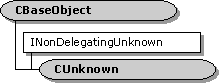

description: The CUnknown class implements the IUnknown interface. Most Component Object Model (COM) objects in DirectShow derive from CUnknown. ms.assetid: 9711d36b-6987-4fb0-a8df-eba94348dc7b title: CUnknown class (Combase.h) ms.topic: reference ms.date: 4/26/2023 topic_type:
[The feature associated with this page, DirectShow, is a legacy feature. It has been superseded by MediaPlayer, IMFMediaEngine, and Audio/Video Capture in Media Foundation. Those features have been optimized for Windows 10 and Windows 11. Microsoft strongly recommends that new code use MediaPlayer, IMFMediaEngine and Audio/Video Capture in Media Foundation instead of DirectShow, when possible. Microsoft suggests that existing code that uses the legacy APIs be rewritten to use the new APIs if possible.]

The CUnknown class implements the IUnknown interface. Most Component Object Model (COM) objects in DirectShow derive from CUnknown.
If you implement a COM object, you might want to derive it from CUnknown. Deriving from CUnknown provides a thread-safe implementation, and saves you the trouble of implementing IUnknown.
For a detailed discussion of how to use this base class, see How to Implement IUnknown. What follows is a brief summary:
| Protected Member Variables | Description |
|---|---|
| m_cRef | Reference count. |
| Public Methods | Description |
| CUnknown | Constructor method. |
| **~ CUnknown** | Destructor method. Virtual. |
| GetOwner | Gets a pointer to the controlling IUnknown. |
| INonDelegatingUnknown Methods | Description |
| NonDelegatingAddRef | Increments the reference count. |
| NonDelegatingQueryInterface | Retrieves an interface pointer and increments the reference count. |
| NonDelegatingRelease | Decrements the reference count. |
| Requirement | Value |
|---|---|
| Header | Combase.h (include Streams.h) |
| Library | Strmbase.lib (retail builds); Strmbasd.lib (debug builds) |